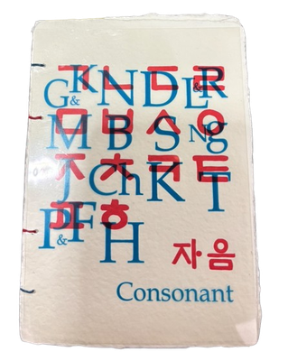

select writing

photo: Jana Sim's Both but Between (2021)
▶
fiction
"Hometown Heroes," The Sun (June 2025)
▶
poetry
Two Poems, The Margins (2023)
"Time Travel," DIALOGIST (2023)
"Nail Salon (봉선화 물 or Balsamina Water)," Cream City Review (2022)
"Little Boy Little House Little World," No Contact (2022)
"A Poem Before Your Death," Poetry South (2022)
"Time Travel," DIALOGIST (2023)
"Nail Salon (봉선화 물 or Balsamina Water)," Cream City Review (2022)
"Little Boy Little House Little World," No Contact (2022)
"A Poem Before Your Death," Poetry South (2022)
▶
academic
Mirror Surfaces: Duplicity in Park Chan-wook's Decision to Leave, Situations (2026)